41 00 ... Overview of Consumables (Electronic Parts Catalogue)
41 00 ... Overview Of Consumables (Electronic Parts Catalogue)
1.0 Adhesives
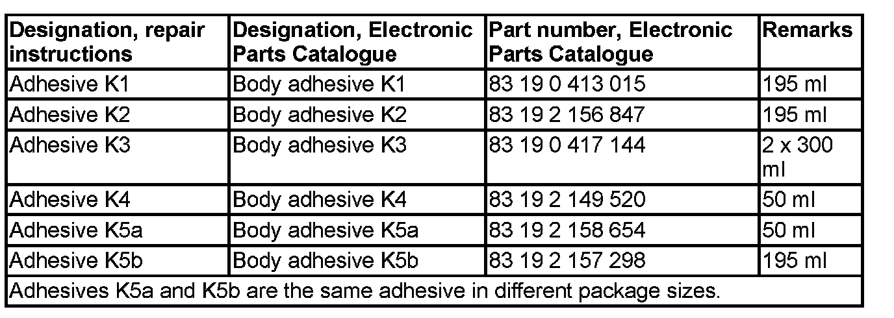
1.1 Primer
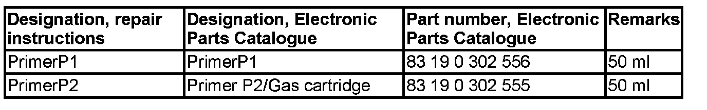
1.2 Cleaning agent
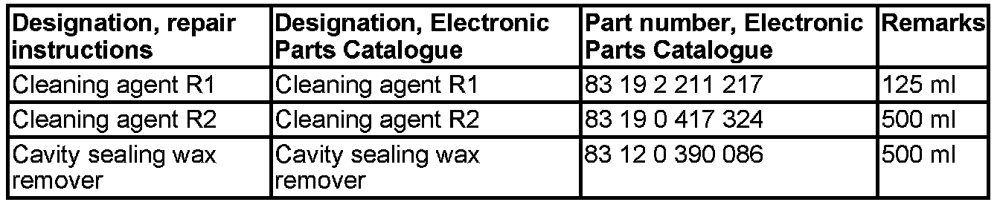
1.3 Fillers
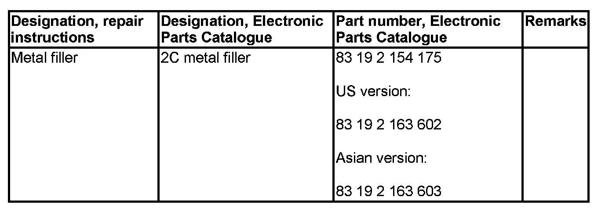
2.1 Rivets
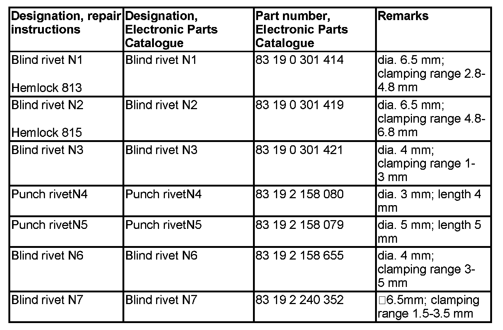
2.2 Plastic nuts
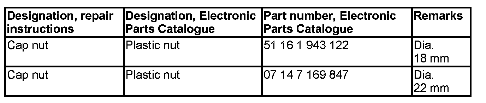
3.0 Primer
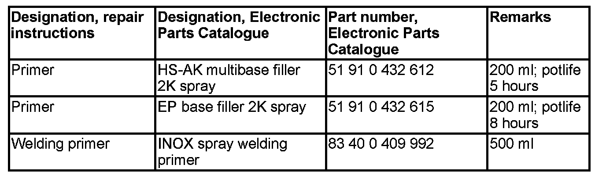
4.0 Sealant
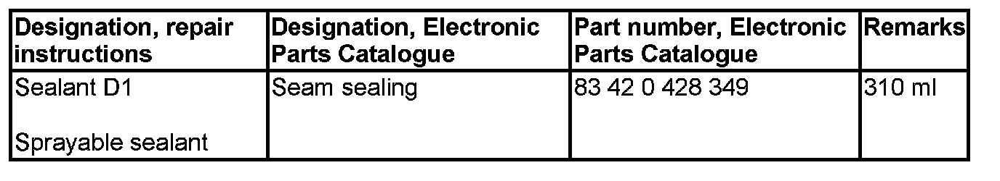
5.0 Cavity preservation
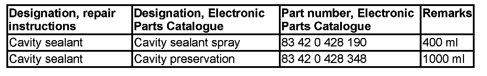
6.0 Cavity foam

7.0 EMC screw (electromagnetic compatibility)
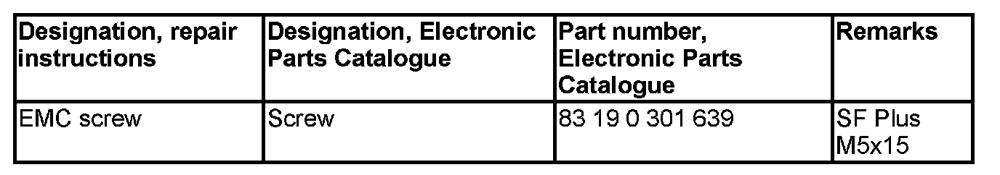
8.0 Twist drill
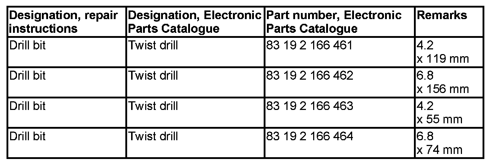